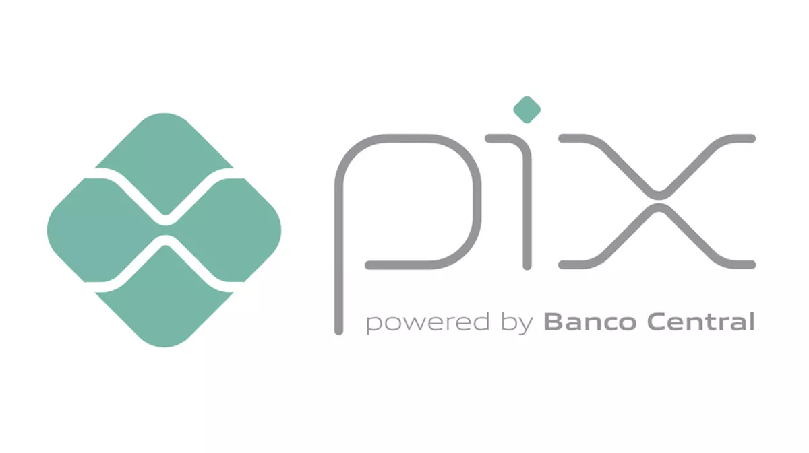

Evolução Digital
Tranformação Digital nos bancos: evolução nos serviços financeiros
Os serviços financeiros estão mudando e você, com certeza, já deve ter percebido isso. Hoje, já não vemos apenas as instituições financeiras tradicionais, mas também um movimento de criação de novas empresas baseadas em tecnologia na prestação de serviços financeiros.
Com o surgimento de novas tecnologias, o setor bancário tem desenvolvido uma série de soluções que visam melhorar e amparar os seus clientes, trabalhando diretamente com suas preferências.
Isso quer dizer que uma nova tendência está se formando com um sistema financeiro que se adapta aquilo que o cliente espera, visando manter sua conta e não perdê-lo para outras instituições.
A história do Sistema Financeiro
Segundo a história, o sistema bancário de hoje surgiu a muitos anos atrás. Sabe-se que operações de
crédito e empréstimos existem desde a época dos fenícios, cerca de 1000 anos a.C.
Contudo, nosso sistema financeiro atual começou a se desenhar durante o período das cruzadas, com os
cavaleiros templários. Essa entidade monástica emitia papeis semelhantes a cheques, que poderiam ser
descontados em
qualquer um de seus “bancos”, garantindo a segurança do dinheiro durante uma viagem.
Com o passar do tempo, outras iniciativas foram surgindo, até que em 1406, foi inaugurado aquele que
seria tido como o primeiro banco da história, em Gênova, na Itália: o Banco Di San Giorgio.
Tecnologias que estão mudando o mercado
Wearables
Uma das tecnologias que estão mudando o mercado financeiro é o uso de wearables para o pagamento.
Isso significa que o cliente pode simplesmente aproximar um relógio ou pulseira digital da máquina de
cobrança para realizar o pagamento de sua compra.
A grande vantagem dessa novidade está na praticidade e rapidez.
Inteligência Artificial
É tendência para facilitar, cada vez mais, o autoatendimento.
São os chamados bots, capazes de manter uma conversa com o cliente, simulando um atendimento real entre
pessoas.
Os bots podem ser utilizados para guiar o cliente por meio de processos,
como um pedido de financiamento ou a abertura de uma conta, e para tirar dúvidas pontuais.
Analytics
Com as ferramentas de analytics, elas poderão prever tendências de variação monetária, entender o
funcionamento do mercado de ações, avaliar riscos.
Isso significa que será possível tomar decisões melhores e oferecer opções melhores aos clientes.
Por exemplo, os bancos poderão realizar recomendações de investimento com um grau de certeza alto sobre
o retorno que cada uma vai produzir.
Cartão Virtual
Ele é a versão virtual de um cartão de crédito normal, ou seja, você pode usá-lo como quiser para as
suas compras online.
Depois de cada uso, ele é “destruído” — ou melhor, invalidado.
Isso quer dizer que, mesmo que o site da compra tenha algum problema de segurança, os dados desse cartão
não poderão ser utilizados para efetuar novas compras em seu nome.
Com isso, alguns consumidores que ainda têm receio de aderir às compras pela internet podem mudar de
ideia.
PIX

Como surgiu o PIX?
Uma nova era no Sistema Financeiro
Com o avanço da tecnologia muitos setores tendem a mudar drasticamente. Isto não é diferente com o
sistema financeiro. Aliás, o setor financeiro é um dos setores mais afetados.
Por isso, com o PIX possuímos uma nova forma de lidar com as transferências bancárias.
É comum sua criação ser associada apenas ao Banco Central como instituição. Mas sempre houve pessoas
responsáveis por sua implementação no país.
Quando surgiu o PIX?
Sendo assim, agora que sabemos quem criou o Pix , podemos falar um pouco mais sobre as vantagens desta
tecnologia.
A tecnologia PIX foi inaugurada em 16 de novembro de 2020. Em pouco tempo tornou-se uma forma bem
popular para pagamento.
Recebido com alguma desconfiança, aos poucos, provou ser um sistema confiável e aberto para melhorias.
Desde sua criação, segundo dados do Banco Central, já foram criadas mais de 423 milhões de chaves PIX.
Além disso, a quantidade de transações também surpreende, somando 1,6 bilhão de transações.
Dessa forma, no seu primeiro aniversário em 2021, inaugurou-se novas modalidades do PIX. O PIX Saque e
PIX troco.
Através dessas opções é possível o usuário sacar ou receber parte do dinheiro em transações no comércio.
Conclusão
A era digital chega para mudar a nossa rotina. Tudo que envolve o sistema financeiro afeta nossas vidas
de forma direta.
Sabemos que muitas pessoas ainda não têm acesso ao sistema bancário. Por isso, o PIX foi responsável
pela acessibilidade de milhões de brasileiros neste sistema.
Além disso, esta tecnologia traz eficiência e rapidez nas transações e já é a principal forma de
transferência escolhida pelos brasileiros.
Quem criou o Pix sem dúvida buscou aproximar as pessoas dos bancos e fez com que as transferências não
fossem longas, caras e com horários definidos.